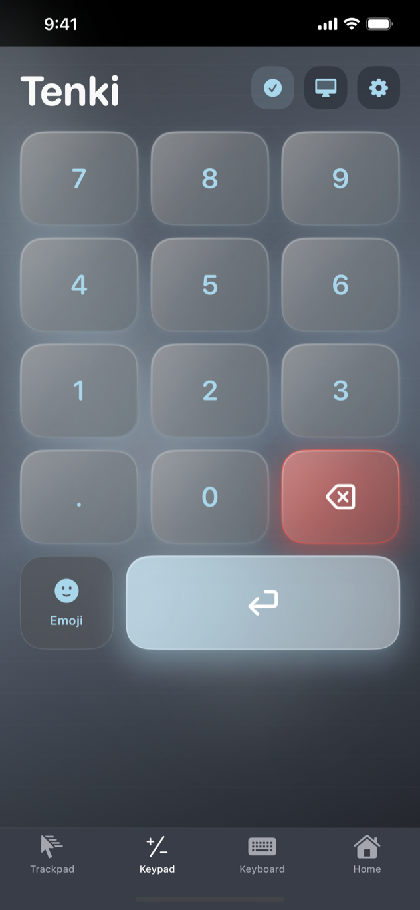
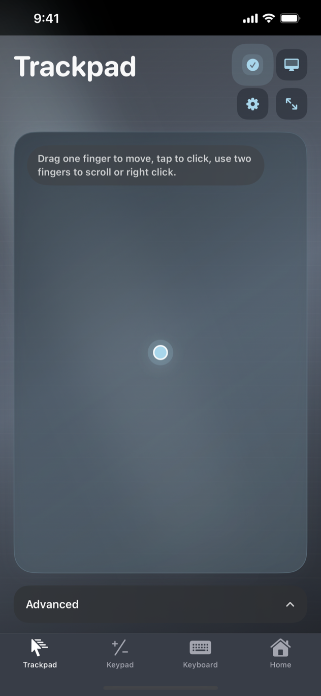
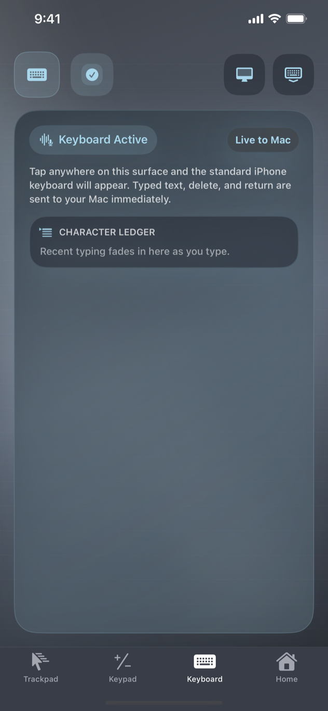

01
Keypad
Choose a classic ten-key or spreadsheet layout with quick access to Tab, equals, operators, clear, and Enter.
SUBMITTED FOR APP STORE REVIEW
Tenki turns your iPhone or iPad into a tactile numpad, trackpad, and keyboard for your Mac—connected directly over your local network.
LAUNCH WEEK $2.99 one-time Then $4.99 · No subscription

MAC COMPANION
TenkiMac securely receives commands from Tenki on your local network. Install it on every Mac you want to control.
VERIFIED RELEASE
0a1278410fd1f890abb9a857dbb2468ad7cf582296413a02a6c884a6be92dd71
CONTROL SURFACES
Start with the numpad your MacBook leaves out, then move between three purpose-built controls without leaving the session.
Choose a classic ten-key or spreadsheet layout with quick access to Tab, equals, operators, clear, and Enter.
Point, click, drag, right-click, and scroll with familiar gestures and adjustable feel.

Type from your iPhone directly into the active app on your connected Mac.

QUICK START
Tenki communicates locally. Keep both devices on the same network during setup and use.
Launch the TenkiMac companion on the Mac you want to control.
In System Settings, open Privacy & Security → Accessibility and enable TenkiMac.
Open Tenki on iPhone or iPad, allow Local Network access, and select your Mac from Available Macs.
Use Trackpad, Keypad, or Keyboard. Your selected theme and control settings persist.
DIAGNOSTICS
Start with the connection checks below. If the problem continues, open a support request with your iPhone and macOS versions.
Confirm that TenkiMac is open and that both devices are connected to the same local network. On iPhone, open Settings → Privacy & Security → Local Network and make sure Tenki is enabled.
Open System Settings → Privacy & Security → Accessibility on your Mac and enable TenkiMac. If it was already enabled, turn it off and on again, then relaunch TenkiMac.
Keep both devices on the same stable Wi-Fi network, move them closer to the access point, and avoid guest networks that isolate devices. Reopen Available Macs and reconnect.
Open Trackpad settings to adjust sensitivity, scroll behavior, smoothing, and haptic strength. The Balanced preset is a good place to restart.
Update to the latest Tenki version. Theme, clean-theme color, keypad layout, sound, haptic, and trackpad preferences are designed to persist between launches.
PRIVATE BY DESIGN
Tenki does not require an account and does not use advertising, analytics, tracking, or cloud storage. Connection discovery and input commands stay between your devices on the local network.
STILL NEED HELP?
Tenki is developed and supported by Collin Poseley. Submit a public support request for connection problems, bug reports, general feedback, or feature ideas.